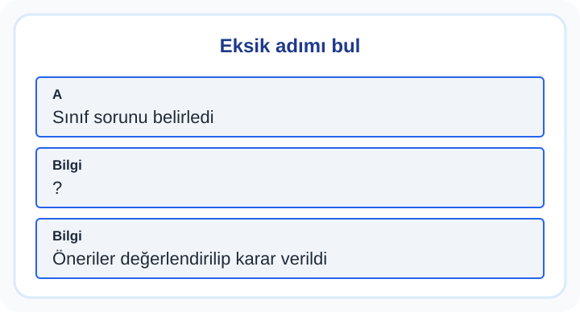

2. Sınıf Türkçe Haklarımızı Biliyoruz Zor Test 1
Haklarımızı Biliyoruz başlığında olayları, kişilerin davranışlarını ve sözcüklerin metindeki anlamını birlikte incele. Bu çalışmadan bir örnek: “Mina, sınıf toplantısı ortamındaki bir sorunu fark etti; kimse söylemeden konuşma sırası geldiğinde düşüncesini açıkça söyledi ve sonunda farklı görüşler dinlenerek ortak karar alındı. Buna göre hangisi kesinlikle söylenebilir?” Cevap ararken sorudaki ipuçlarını kendi düşüncenden ayır.
10 soru · Yaklaşık 19 dakika. Bu bir süre sınırı değildir; açıklamaları kendi hızında inceleyebilirsin.
Haklarımızı Biliyoruz: konu anlatımı ve çözümlü çalışma
Başlamadan önce dikkat et
Kendi hakkını kullanırken başkasının aynı hakkını yok sayma.
Bu testten iki çözümlü örnek
1. örneği incele
Mina, sınıf toplantısı ortamındaki bir sorunu fark etti; kimse söylemeden konuşma sırası geldiğinde düşüncesini açıkça söyledi ve sonunda farklı görüşler dinlenerek ortak karar alındı. Buna göre hangisi kesinlikle söylenebilir?
- Mina haklarla sorumlulukları birlikte düşünür
- Mina yalnız ödül istemiştir
- Mina sorunu önemsememiştir
Cevap ve gerekçe
Mina haklarla sorumlulukları birlikte düşünür
Sorunu fark edip çözüm üretmesi, mina haklarla sorumlulukları birlikte düşünür olduğunu gösterir.
2. örneği incele
Haklarımızı Biliyoruz olayının başı ve sonu görselde verilmiştir. Araya hangi cümle gelmelidir?

- Herkes sırayla görüşünü açıkladı
- Sınıf sorunu belirledi
- Öneriler değerlendirilip karar verildi
Cevap ve gerekçe
Herkes sırayla görüşünü açıkladı
Başlangıç ile son arasındaki doğru geçiş “Herkes sırayla görüşünü açıkladı”dir.
Testten sonra kısa çalışma
Bir okul durumu için hak ve sorumluluğu iki sütuna yaz.
Yanlışlarını Öğren bölümünde kendi cevabını açıklamayla karşılaştır. Bir sonraki denemede cevabı ezberlemek yerine nedenini anlat. Veliler için sonuçları yorumlama
Soruların hazırlanması ve kontrol sınırları · İçerik hatası bildir
Öğrenme alanı: Haklarımızı Biliyoruz. Buradaki beceriler çalışma odağını anlatır; resmî MEB öğrenme çıktısı kodları değildir. testcoz.pro, Millî Eğitim Bakanlığı’nın resmî sitesi değildir.
Testleri kayıt olmadan çözebilirsiniz. İsteğe bağlı kayıt, günlük hedef ve öğrenci paneli gibi ek özellikler için sunulur.